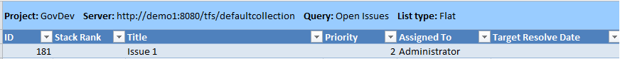

You can use the Issues workbook to review and rank problems that might block team progress. The default workbook query displays a flat list of all issues that are defined for the team project.
|
|
|---|
|
The Issues workbook is stored on the server that hosts SharePoint Products for your team project. If a project portal has not been enabled for your team project, you cannot access the workbook. For more information, see Access a Team Project Portal and Process Guidance. When you open the workbook, click Edit Workbook next to Server Workbook so that you can modify the workbook. For more information, see Workbooks (GovDev). If you cannot open the workbook, you can open the Issues team query by using Team Explorer or Office Excel. This topic describes how to manage issues by using Office Excel. For information about how to manage issues within the list of query results, see Modify Work Items within a List View. |
|
In this topic |
To access the Issues workbook
|
Required Permissions
To view a team query, you must be assigned or belong to a group that has been assigned Read permissions for the team query folder for the team project. To modify a query, you must be assigned or belong to a group that has been assigned Contribute or Full Control permissions for the team query. For more information, see Organize and Set Permissions on Work Item Queries.
To create or modify work items, you must be a member of the Contributors group or your View work items in this node and Edit work items in this node permissions must be set to Allow. For more information, see Team Foundation Server Permissions.
 Issues
Listed in the Workbook
Issues
Listed in the Workbook
You can use the Issues workbook to manage active issues. The Issues worksheet references the Issues team query, which is configured to find all issues that are defined for the team project. The following illustration shows an example of the workbook opened in Office Excel.

Ranking
and Prioritizing Issues
You can rank, prioritize, and specify due dates to issues that are listed in the workbook.
To rank and prioritize issues
-
In the Issues workbook, click the Issues worksheet.
-
If you have opened a saved workbook, on the Team tab, in the Work Items group, click Refresh.
This step helps make sure that the list contains the most current information.
-
Review the rank and priority of each issue in the list, and update the following fields as needed:
-
In Stack Rank, type a number that indicates how important the issue is to the completion of the iteration.
-
In the Priority list, Click the priority for resolving the issue.
-
In Target Resolved Date, click the date by which the issue must be resolved.
-
-
(Optional) Save the workbook.
You can later open the local copy of the workbook, refresh the list, and make additional changes. You do not need to open the workbook from Team Explorer every time.
-
On the Team tab, in the Work Items group, click Publish.
 Note
Note
You can use the undo feature in Excel to undo recent changes that you made to work items before you publish the changes.
For more information, see Publish Work Items in Office Excel.
-
Save and close the workbook.
Adding
Issues to the Workbook
You can add issues to the database for tracking work items by adding them to the Issues workbook and publishing the workbook.
To add issues to the database for tracking work items
-
In the Issues workbook, click the Issues worksheet.
-
If you have opened a saved workbook, on the Team tab, in the Work Items group, click Refresh.
This step helps make sure that the work item list has the most current information.
-
For each issue that you want to add, click the row at the bottom of the list, and specify the following information for each issue that you want to add:
-
In Title, type an entry that indicates the nature of the problem or block.
-
In the Work Item Type list, click Issue.
Note
Before you can publish a work item, you must specify its type.
-
-
In Stack Rank, Priority, and Target Resolved Date, specify values.
For more information, see Ranking and Prioritizing Issuesearlier in this topic.
-
(Optional) To show more Team Foundation fields in the list of work items, on the Team tab, in the Work Items group, click Choose Columns.
For more information, see Add or Remove Columns in a Work Item List.
-
Add information to the remaining fields as appropriate.
For more information about each field, see Issue (GovDev).
-
(Optional) Save the workbook.
-
On the Team tab, in the Work Items group, click Publish.
Reordering
the List of Issues
You can reorder the issues that are listed in the Issues workbook by using the Office Excelfeature for sorting rows.
To reorder the list of issues in the workbook
-
Click the
 down arrow next to Rank or Priority, and then click the appropriate option.
down arrow next to Rank or Priority, and then click the appropriate option. -
(Optional) Save the workbook.
Linking
an Issue to Another Work Item
You can link an issue to another work item, such as a use case or a task, from Office Excel.
To link an issue to an existing work item
-
In the Issues workbook, click the row that lists the issue to which you want to add a link.
-
On the Team menu, click Links and Attachments .
The View/Edit Work Item Links and Attachments dialog box opens.
-
On the Links tab, click
 Link to.
Link to.The Add Link to Issue dialog box opens.
-
In the Link type list, click the type that represents the relationship that you want to create.
For example, click Related to establish a peer-to-peer relationship.
-
Perform one of the following actions:
-
In Work item IDs, type the IDs of the work items that you want to find. Separate IDs by commas or spaces.
-
Click Browse to specify work items from a list.
The Choose linked work items dialog box appears.

In the Saved query list, click a query that contains the work items that you want to add. For example, you can click Open Use Cases or Open Tasks.
Click Find, and then select the check box next to each work item that you want to link to the issue.
Click OK.
-
(Optional) Type a description for the items that you are linking to.
-
-
Click OK.
For more information, see Find Work Items to Link or Import.
-
In the View/Edit Work Item Links and Attachments dialog box, click Publish, and then click Close.
-
(Optional) Save the workbook.
Filtering
the List of Issues
You can filter the issues that are listed in the Issues workbook by using the Office Excel features for filtering rows in the following ways:
-
Filter on State to show only Active or Closed issues.
-
Filter on Area or Iteration to show only the issues that are assigned to specific product areas or iterations.
Note
Your project administrator defined the Area and Iteration tree hierarchies for the team project so that the team can track progress by these distinctions. For more information, see Create and Modify Areas and Iterations.
To filter the issues that are listed in the workbook
-
Click the
down arrow next to State, Area,
or Iteration, and then select the check box of each state,
product area, or iteration to include. -
(Optional) Save the workbook.
Additional
Resources for Modifying Issues By Using Office Excel
For more information about how to modify issues by using Office Excel, see the following topics: